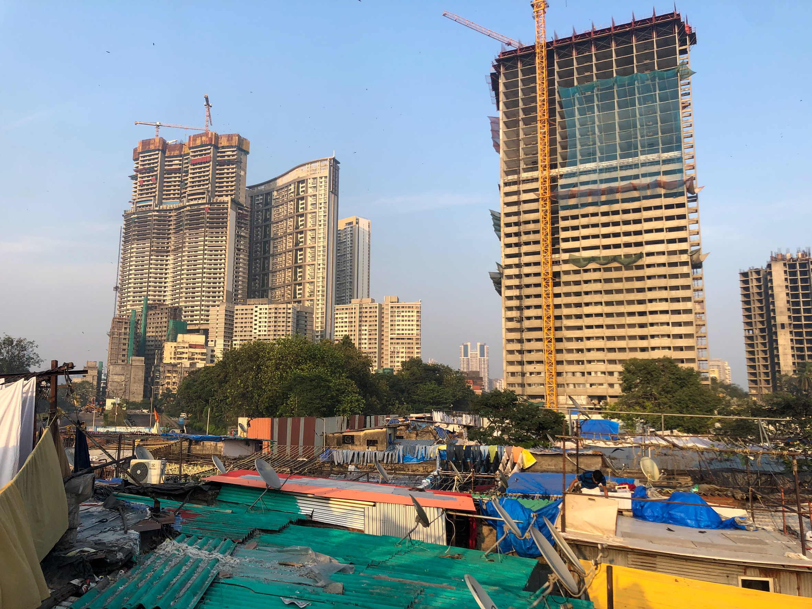
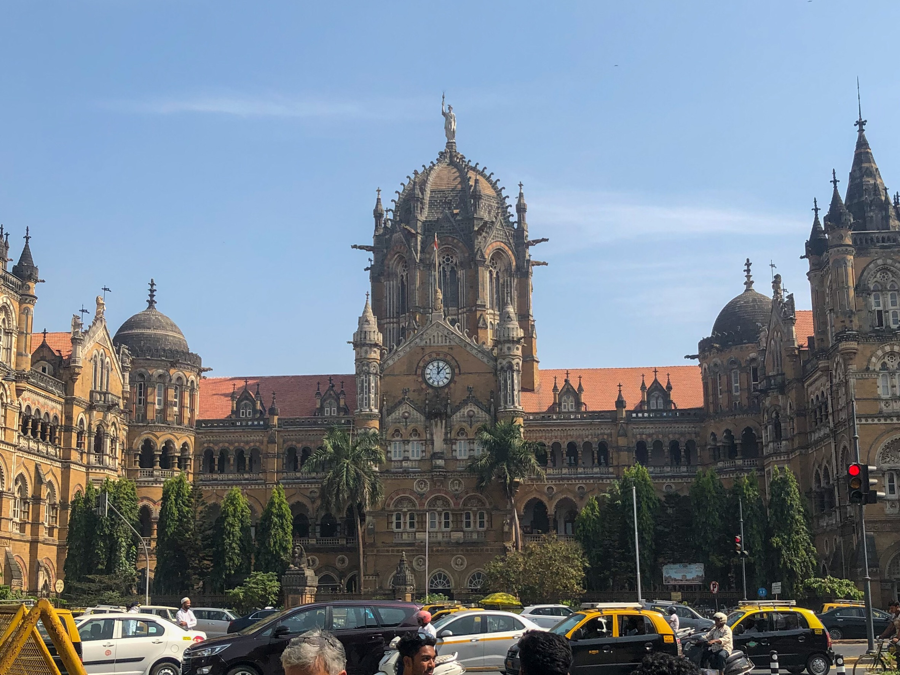

さっそくムンバイのおすすめの観光地をご紹介していきます！
まずはじめはドービー・ガードです。ここは町の洗濯物のほとんどが集まる、洗濯場です。ムンバイ州自体はインドの中でもかなり栄えており、ビルが多く建ち並んでいます。しかし、ここドービー・ガードではビルはなく、スラム街のようになっています。ここでは、スラム街と高層ビルを同時に見ることが出来ます。
下にドービー・ガードの外観を載せておきます！ぜひご覧になって下さい！

さらに知りたい方は↓にウィキペディアのリンクを張っておくのでご覧下さい！
ドービー・ガードの詳しいサイトへのリンク次に「インド門（ムンバイ）」についてご紹介していきます！
私がおすすめする理由は、ここに来ると隣にタージマハルホテルというホテルがあり、そのインドの昔ながらの門とい、イギリスチックな建物の両方を見ることが出来ます。
さらに、マーケットが近くにあり、インドの衣類やおいしいインド料理を食べることが出来ます。
下にインド門（ムンバイ）の外観を載せておきます！ぜひご覧になって下さい！
さらに知りたい方は↓にウィキペディアのリンクを張っておくのでご覧下さい！
インド門（ムンバイ）の詳しいサイトへのリンク最後に「チャトラパティ・シヴァージー・ターミナス駅」についてご紹介していきます！
私がおすすめする理由は、イギリスチックな建築構造が本当に美しく、初めて見た時にここイギリスなのかと思うくらいイギリスのように感じさせる建物であるからです。
建物の中もイギリスを思わせるような造りになっており、入場料もないのでぜひ行ってほしい場所です！
下にチャトラパティ・シヴァージー・ターミナス駅の外観を載せておきます！ぜひご覧になって下さい！

さらに知りたい方は↓にウィキペディアのリンクを張っておくのでご覧下さい！
チャトラパティ・シヴァージー・ターミナス駅の詳しいサイトへのリンクところで、日本とインドのGDPの成長率は気になりませんか？
GDPとは国内総生産のことで、一定期間内に国内で新たに生み出されたモノやサービスの付加価値のことです。％で表示されます！
私は経済学部なので、そういった部分が気になったので、グラフを下に作成してみました！ぜひ見ていってください
以上になります。見てくださりありがとうございました。
トップに戻る